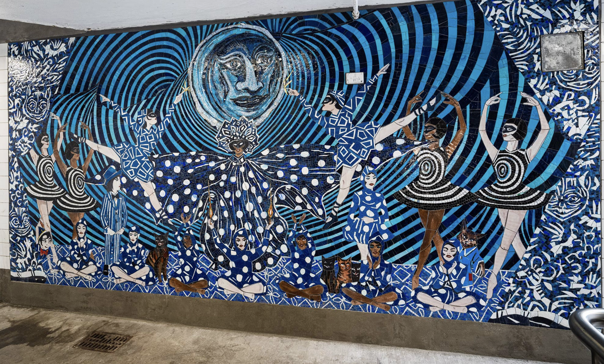
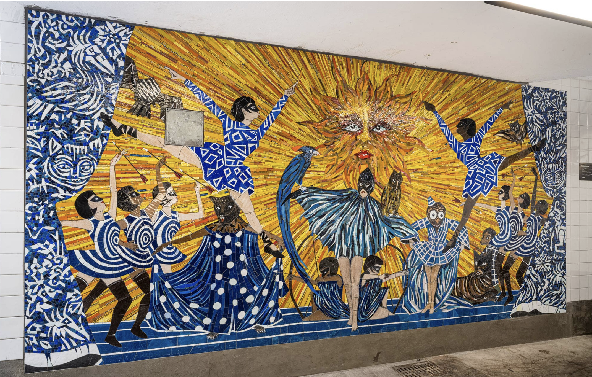
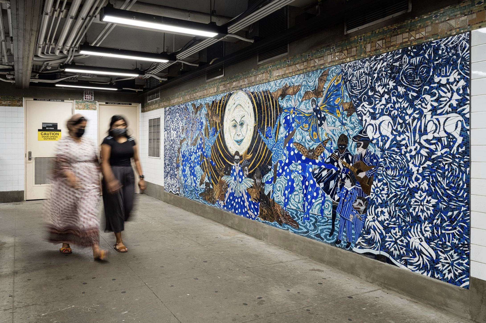
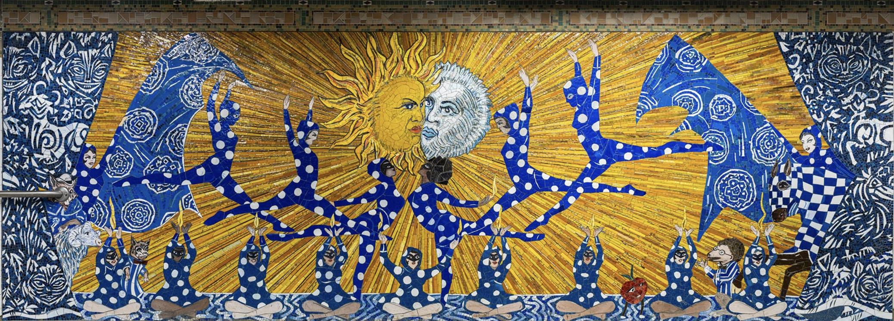
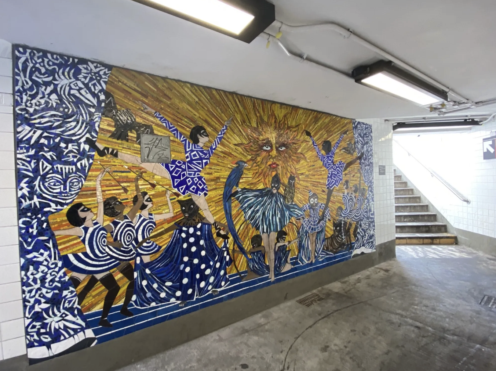

Marcel Dzama, No Less Than Everything Comes Together, Bedford Av






"In these works it is my intention to bring the sun, the sky, and the moon to the underground,"
Dzama said. "What I love most about New York is its people, and for me it was important to represent
them and all of their wonderful complexities and diverse beauty in the piece. People looking and quietly
observing together. In the subway, it’s always a togetherness that bonds us uniquely
like no other place in the world." - Marcel Dzama
What is absolutely my favorite subway mosaic installation ever, you can find at Bedford avenue, a culmination
of all the resources and phenomenons that pull us toegther like the sun and the moon, in combination with
these vivid and striking complementary colors, it is absolutely impossible to miss, and even if you are in a rush, the
pieces are placed at parts of the station where there is the most movement in and out. read the artist statement below
to understand the beautiful purpose and idea behind this spectacular mosaic.